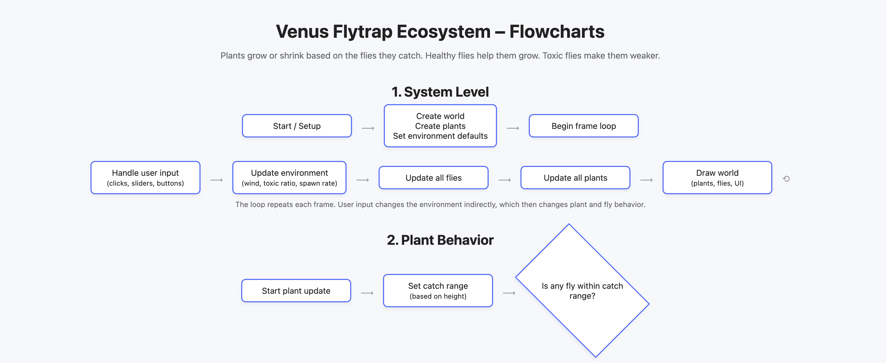

Venus Flytrap Game
Process Documentation
01. Introduction
This project is an interactive mini-game built with p5.js for my creative coding assignment.
The goal was to design a simple object-oriented system where multiple objects interact—
in this case: plants and flies.
I wanted to create something playful, visually cute, and connected to nature.
The Venus Flytrap felt perfect because it combines character, motion, and game-like feedback.
02. Initial Idea & Inspiration
The core idea began with asking:
“What if the plants could automatically catch moving flies,
and the player could control the world conditions using sliders?”
Inspiration sources included:
- Simple arcade games (e.g., Pac-Man arc mouth → used for the plant head)
- Cute nature icons
- My interest in small interactive behaviors
03. Sketches & Visual Exploration
I began with visual sketches to determine the plant shapes.
The main goal: keep the plant iconic but readable when animated.
Example sketch placeholder:

Challenges during sketching:
- Finding a mouth shape that could open/close (solution: Pac-Man arc)
- Balancing the leaf sizes so it didn’t look like a tree or bush
- Making the design clear even at small scale
04. Coding the System (Object-Oriented Programming)
The project uses three main classes:
- Fly – moves, bounces on edges, has type (healthy/toxic)
- Plant – grows or shrinks depending on fly type
- Sketch – manages global gameplay, UI controls, background, win/lose logic
Core OOP relationships:
Each Plant receives the array of Fly objects and decides:
“Is there a fly near me? If yes, catch it.”
Sliders directly modify global parameters:
- Fly speed
- Toxic fly ratio
- Background color picker
Example pseudocode of the system:
Plant.update(flies):
look for nearest fly in range
if good fly → grow + increase score
if toxic fly → shrink + lose life
if energy hits 0 → plant dies
Fly.update():
move based on base speed × slider value
bounce on edges
05. Challenges
During development several challenges appeared:
❌ Challenge 1 — Plant head drawing looked wrong
The first version used circles, then triangles.
The solution was using a Pac-Man–style arc rotated upward.
❌ Challenge 2 — Controls overlapped plants
The default p5 DOM positioning wasn’t consistent.
The fix was placing sliders outside the canvas and aligning text manually.
❌ Challenge 3 — Flies stopped spawning
Caused by a missing update() call after DOM restructuring.
Fixed by restoring the update loop:
fly.update(speedSlider.value());
❌ Challenge 4 — Color picker broke layout
Setting the Y-offset too high hid the entire animation.
Fixed by raising UI to height + 10 instead of negative space.
06. Final Results
The final game includes:
- Three interactive Venus Flytraps
- Healthy and toxic flies with different colors
- Growing/shrinking animation based on what they eat
- Score + life system
- Fly speed + toxic ratio sliders
- Background color picker
Final screenshot placeholder:
"
title="
Interactive Venus Flytrap Game"
loading="lazy"
>
07. Reflection
This project helped me understand:
- How multiple classes communicate in an OOP system
- How to use DOM elements with a p5.js canvas
- How to debug animation logic when objects disappear
- How simple visual design choices (like an arc) can solve readability issues
If I continue this project, I want to add:
- Manual clicking to feed plants
- Sound effects
- Day-night cycle background
- Random events like “super fly” or “storm”